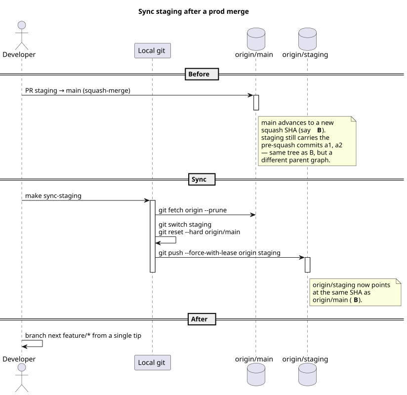

Sync staging after a prod merge
Reset the long-lived staging branch to match origin/main after a staging → main PR has squash-merged. Run this once after every promotion to keep staging from drifting from prod, so the next feature branches off a clean common ancestor. The deployment topology that makes this matter is fixed by ADR 0034; branch naming and trunk-flow conventions live in ADR 0017.
When to run this
Right after a successful Release to staging cycle ends — i.e. the staging → main promotion PR has merged and deploy-prod.yml has published the new prod build. Do not run this in the middle of a release: if there are validated changes on staging that have not yet promoted to main, the reset would throw them away.
Why a sync is needed at all
Squash-merge on the staging → main PR replaces N original commits on staging with a single new commit on main — a different SHA, a different parent graph. After the merge, main has the squashed commit; staging still has the N originals. The two branches now share no recent ancestor even though their trees are identical. Left alone, this divergence accumulates one squash per promotion. A fresh feature/* branched off main would be clean; branched off staging it would carry the leftover unsquashed commits as needless noise on the next PR.
Resetting staging to origin/main after each promotion keeps the graph honest: same SHA on both branches, next feature branches off a single tip, and there is exactly one chain of history to read.

make sync-staging closes it.Before you start
- The
staging → mainPR has merged anddeploy-prod.ymlhas succeeded. Confirm prod URL renders the change in a private window. - No validated-but-not-yet-promoted commits remain on
staging. If a teammate has merged a feature tostagingthat has not yet shipped through main, stop — resetting would drop their work. - Your local working tree is clean (no uncommitted changes, no staged changes).
make sync-stagingaborts if either is dirty. - You have
Writeaccess tooriginand force-push is permitted onstaging. Once ADR 0034 W2 hardening lands, thestagingbranch protection will need Allow force pushes enabled for the admin who runs this — or this how-to is replaced by a merge-commit strategy. Today, no protection exists yet and force-with-lease just works.
Steps
- Recommended path — one command.
The target fetchesmake sync-stagingorigin, switches tostaging, hard-resets it toorigin/main, force-with-lease-pushes the result, and returns you to whichever branch you started on. It refuses to run on a dirty working tree. - Manual path — four commands, same effect. Use when you want to see each step or you are debugging a failure of the target above.
git fetch origin --prune git switch staging git reset --hard origin/main git push --force-with-lease origin staging--force-with-lease(not plain-f) is non-negotiable: it refuses the push if someone else movedstagingbetween your last fetch and now, which is the one case where a plain force-push would silently destroy in-flight work. - Confirm the new state.
Both should print nothing — i.e. zero commits between the two refs in either direction. That is the definition of «in sync».git log --oneline origin/staging..origin/main git log --oneline origin/main..origin/staging
Verify
git ls-remote origin main stagingshows the same SHA for both refs.git log --oneline origin/main..origin/stagingand the reverse both return nothing.- A new
feature/*branched from eithermainorstagingproduces an identical starting tree and history. - No CI fires from the sync push by itself —
stagingalready points at the SHAmainjust deployed, anddeploy-staging.ymlonly acts on successfulCIworkflow runs against thestagingbranch. The reset moves the ref to a SHA whose CI has already completed (it was the main-CI run that promoted prod), so workflow_run does not re-trigger.
Troubleshooting
| Symptom | Likely cause | Fix |
|---|---|---|
make sync-staging aborts with «Working tree is dirty». |
Uncommitted or staged local changes — the target refuses to clobber them with a branch switch + reset. | Commit, stash (git stash push -m "wip"), or discard your local edits, then re-run. |
git push --force-with-lease rejected with stale info. |
Someone (or another machine) advanced origin/staging after your last fetch — likely a fresh feature merge. |
Do not use -f as an escape hatch. Run git fetch origin, inspect git log origin/main..origin/staging — if those new commits should ship, finish their staging → main PR before syncing. If they should not, hand-resolve with the author before forcing. |
| «remote rejected — branch protection rule violated». | ADR 0034 W2 landed and the staging branch protection now blocks force-push. |
Either toggle Allow force pushes for admins on the protection rule and re-run, or switch the team's strategy to merge-commit on staging → main and retire this how-to. The trade-off is recorded in ADR 0034 § Consequences. |
I synced too early and lost a validated feature that was on staging but not yet on main. |
The pre-merge prerequisite was skipped — there was an unpromoted commit and the hard-reset dropped it. | Recover from the local reflog (git reflog show staging still has the pre-reset SHA), reset staging back to it, force-with-lease push. Then ship the feature properly through a staging → main PR before re-running the sync. |
I ran sync but next make sync-staging still shows the old divergence. |
The push silently failed — most likely a stale credential or a network blip — and stdout was missed. | Run the manual path and read the output of git push --force-with-lease origin staging directly. Fix the credential / network issue and retry. |
Related
- How-to · Release to staging — the procedure this one runs after. The two together describe one full cycle from feature branch through prod.
- ADR 0034 · Portal staging via dual Pages repos — why
stagingexists as a long-lived branch in the first place, and the W2 hardening that may eventually retire this sync step. - ADR 0017 · Branch naming and repository workflow — the convention
feature/* → staging → mainthis how-to assumes.